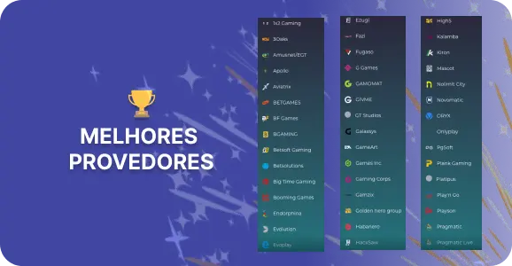
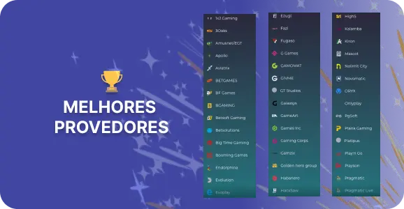

Rokubet Portugal: a Melhor Experiência de Jogo e Apostas
A Rokubet Portugal é uma plataforma de jogo online que se destaca pela diversidade de serviços oferecidos aos jogadores portugueses. Com uma ampla seleção de jogos, incluindo slots, blackjack, roleta, poker e opções de casino ao vivo, a plataforma vem transformar o jogo em Portugal.
|
Características |
Descrição |
|
Jogos Disponíveis |
Slots, jogos de mesa como blackjack, roleta, poker, opções de casino ao vivo e apostas online. |
|
Plataforma |
Site e aplicação para smartphone |
|
Licenciamento |
Licença de operação emitida por autoridades reguladoras reconhecidas com sede em Curacao. |
|
Métodos de depósito e levantamento |
Visa, Paysafecard, Santander, Novo Banco, Caixa Geral de Depósitos, Skrill, Rapid Transfer by Skrill, Neteller, Binance Pay, Criptomoeda, Cashlib e Mastercard. |
|
Promoções e Bónus |
Bónus de boas-vindas, bónus de dia da semana, e sistema de recompensas. |
|
Segurança |
Implementa medidas robustas de segurança e privacidade para proteger os dados dos jogadores e as transações financeiras. |
|
Suporte ao Cliente |
Chat ao vivo, e-mail, e suporte telefónico. |
 Disponível tanto em formato de site quanto em aplicação para dispositivos móveis, a Roku Bet proporciona conveniência e acessibilidade aos jogadores, permitindo que desfrutem dos seus jogos favoritos a qualquer hora e em qualquer lugar.
Disponível tanto em formato de site quanto em aplicação para dispositivos móveis, a Roku Bet proporciona conveniência e acessibilidade aos jogadores, permitindo que desfrutem dos seus jogos favoritos a qualquer hora e em qualquer lugar.
A Roku bet é uma plataforma licenciada por autoridades reguladoras reconhecidas, garantindo conformidade com os mais altos padrões de segurança e justiça nos jogos. Com uma ampla gama de métodos de depósito e pagamento, incluindo cartões de crédito e transferências bancárias, a Roku bet proporciona conveniência e flexibilidade aos jogadores.
Além disso, a Roku bet oferece generosos bónus de boas-vindas, jogadas grátis e promoções contínuas, tudo projetado para aprimorar a experiência de jogo dos usuários e incentivá-los a participar ativamente da plataforma. A plataforma também implementa medidas robustas de segurança para proteger os dados dos jogadores e as transações financeiras, garantindo uma experiência de jogo segura e confiável em todos os momentos.
O suporte ao cliente é uma prioridade absoluta da Roku bet. A plataforma oferece diversos canais de comunicação, incluindo chat ao vivo, e-mail e suporte telefônico, para resolver dúvidas e problemas dos usuários de forma rápida e eficaz.
Com uma combinação de segurança, variedade de jogos e suporte ao cliente exemplar, a Roku bet oferece uma experiência de jogo envolvente e segura para os entusiastas portugueses de jogos de casino e apostas online.
 

Para proporcionar uma experiência tranquila e satisfatória aos seus utilizadores, o Roku bet busca fornecer informações claras e acessíveis sobre o seu funcionamento e políticas.
A experiência de jogo oferecida pela Rokubet Portugal é uma verdadeira jornada de entretenimento e segurança para os entusiastas de jogos de casino e apostas online. Com uma equipa dedicada, a plataforma procura proporcionar uma experiência envolvente e confiável, garantindo aos jogadores momentos emocionantes e tranquilos nas suas atividades de jogo. Com um compromisso contínuo com a excelência e a satisfação do cliente, a Roku bet Portugal continua a ser uma escolha de destaque para os jogadores portugueses.
Nesta secção de Perguntas Frequentes (FAQ), abordaremos algumas das questões mais comuns que os normalmente jogadores têm ao utilizar a Rokubet Portugal. Desde quem pode se registar até quais são os melhores métodos de suporte, estas respostas visam oferecer orientação abrangente e ajudar os usuários a aproveitarem ao máximo sua experiência na Rokubet.